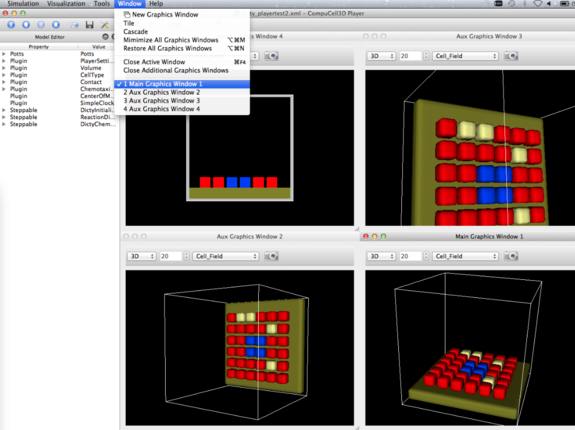

How can one specify multiple graphics windows to be created in a .xml model? We piggy-back off the 'PlayerSettings' plugin. A 'NewWindow' element will create additional window(s). In addition, a 'MainWindow' will be used to control the viewing parameters of the default, main graphics window. (This is in addition to the original 'Project2D' or 'View3D' element and their attributes that have controlled the main window. They will be kept for backward compatibility).
As a test case, we use the 3D dicty demo (Demos/dicty_40x40/Simulation/dicty_try_40x40.xml) with the following 'PlayerSettings' used in place of what is in the demo:
<Plugin Name="PlayerSettings">
<MainWindow Projection='3D' CameraPos="73 26.14 113.8" CameraViewUp="0.01 0.99 0.02" CameraClippingRange="0.13 129.9" CameraDistance= "56.7" /> <NewWindow Projection="3D" WindowNumber="1" CameraPos="83 26.14 113.8" CameraViewUp="0.01 0.99 0.02" CameraClippingRange="0.13 129.9" CameraDistance= "56.7" />
<NewWindow Projection="3D" WindowNumber="2" CameraPos="-19 17. 66." CameraFocalPoint="-16 18 61" CameraViewUp="0.01 0.99
0.02" CameraClippingRange="2.9 134.2" CameraDistance= "5.4" /> <NewWindow Projection="2D" XZProj="20"/>
<TypesInvisibleIn3D Types="0,5" />
</Plugin>
We can obtain the 3D camera parameters for a window by: 1) making the desired window "active" (via the "Window" menu) and 2) pressing ctl-p (cmd-p on Macs) to have the camera parameters printed to the terminal (and also written to a file, player.txt), e.g.:
CameraPosition= 46.34766059199677 -76.54456141016001 56.29457463985567 CameraFocalPoint= 21.711640964300365 19.096129279838177 17.310441242418705 CameraViewUp= -0.13950666347247764 0.342740273273504 0.9290139912418868 CameraClippingRange= 45.640621180883464 183.1450429031906 CameraDistance= 106.178330348 ViewAngle= 30.0 ---- SimpleTabView.py: dumpPlayerParams --> player.txt
